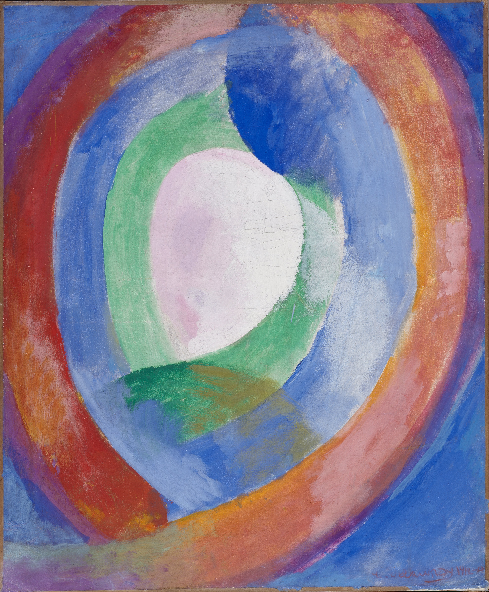

Fondements · Théorie des ensembles
Fondements mathématiques
Axiomes de la théorie des ensembles, constructions ensemblistes, entiers naturels et axiome du choix.
Mathématiques
Des cours pour prendre le temps de comprendre. Des problèmes pour aller plus loin.
Explorer les documents
Fondements · Théorie des ensembles
Axiomes de la théorie des ensembles, constructions ensemblistes, entiers naturels et axiome du choix.
Algèbre · Théorie des groupes
Représentations, théorème de Maschke, caractères et groupes abéliens finis.
Combinatoire additive · Analyse
Ensembles de Sidon, séries génératrices et sommes d’inverses.
La cour des miracles rassemble des cours et des problèmes de mathématiques, accessibles gratuitement au format PDF. La collection s’enrichit au fil des publications.